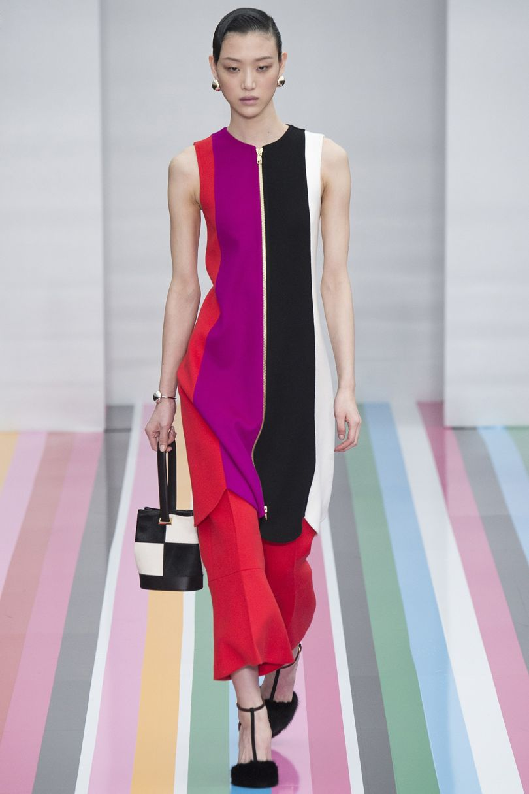

IT IS NO NEWS in the industry that many fashion houses are built on shoes and handbags rather than clothes. The concept has been accepted for at least two decades, with the Prada-Gucci stand-off in the Tom Ford years of the 1990s as a defining moment for Italian fashion.

Surely upscale customers across the world all get it - that if accessories are front of store, they are also in the front line for sales. Working out why clothes from these companies are secreted away on upper floors does not require rocket science; they bring in a fraction of the company's trade.
I have been thinking about this conundrum during my current trip to Milan, where the calendars are scattered with accessories-only events. But they don't receive as much attention as when they put their creations on the catwalk. So I have been pondering the direction that the masters of shoes and bags should, or could, be taking.
The colourful, angular, eye-popping, patterned runway told the story of Salvatore Ferragamo from designer Massimiliano Giornetti in one word: "art".
Although the shoes and bags have become richer and more three-dimensional during his tenure - for example a heel lapped with fur -they remain practical, with the designer enthusiastic about his role.
"I always play with details. It's about the freshness of shoes, about wanting to show the beautiful craftsmanship," Giornetti said before the show, where a table of accessories had a bold position backstage.